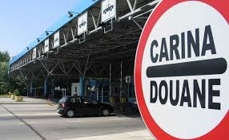

Logistika je specijalizovana privredna djelatnost koja se bavi fizičkim prometom roba i poslovima koji su s njima u vezi. Logistika se kao aktivnost može opisati kao skup specifičnih funkcija, poslova, operacija, vještina i pravila koja djelotvorno omogućuju otpremu, dopremu i prevoz materijalnih dobara svim prevoznim sredstvima, svim prevoznim putevima, u konvencionalnom i kombiniranom transportu.
Transportne usluge su bazna djelatnost logističkih procesa u funkcionisanju naše kompanije. Novošped d.o.o. već preko trideset godina uspješno organizuje preuzimanje, transport i isporuku roba na adresu kupca. Pružamo usluge nacionalnog i međunarodnog drumskog, pomorskog, vazdušnog i željezničkog transporta, u saradnji s renomiranim partnerima.
Naša vozila i vozila naših partnera ispunjavaju najviše ekološke standarde (EURO 6), a sva su praćena satelitskom tehnologijom, čime omogućavamo potpuni nadzor pošiljke u realnom vremenu. Takođe, nudimo mogućnost kombinovanog transporta — drumski, željeznički i pomorski, u zavisnosti od vrste i količine tereta.
U našem carinskom skladištu možemo vam u svakom trenutku osigurati potreban skladišni prostor. Najmodernija oprema za rukovanje nam omogućava obradu pojedinačnih težina do 4 tone. Sa strukturiranim i kontrolisanim skladištima u blokovima i regalima, možemo odgovoriti na mnogobrojne individualne zahtjeve kupaca. Osim preuzimanja vaše robe, nudimo i prepakivanje, pakovanje i označavanje robe koju ste uskladištili do isporuke. Dakle, posjedujemo sve potrebne kapacitete na raspolaganju 24 sata dnevno, kako bi ste kompletnu brigu o vašoj pošiljci prepustili našem stručnom i iskusnom timu.

Novošped d.o.o. je tokom svoga tridesetogodišnjeg iskustva u poslovima špedicije usavršio posredovanje carinske dokumentacije, te vam nudi kompletne špediterske usluge, uz naglasak na pripremu dokumentacije za potrebe uvoznih i izvoznih carinskih postupaka, te dokumentacije za potrebe tranzita robe. Na raspolaganju vam je naš dokazani visoko profesionalni tim eksperata iz oblasti carinskih zakonskih propisa, koji će vam uvijek ponuditi optimalno rješenje, uzimajući u obzir prvenstveno vaše troškovne i vremenske zahtjeve, te uključujući uvijek sve novine u području carinskih zakonskih propisa.